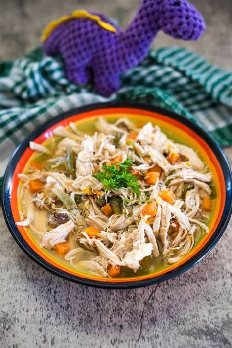
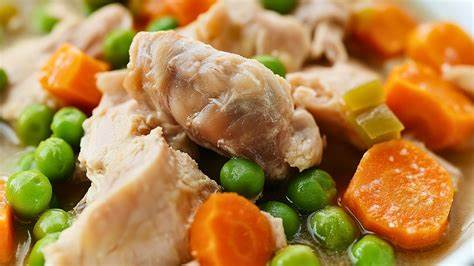

Chicken stew

Chicken stew for dogs is a nutritious, easy-to-digest meal tailored to canines dietary needs—available as homemade or commercial options. Centered on boneless, skinless chicken (a lean, low-allergen, palatable protein), it’s a top choice for pet parents avoiding overprocessed kibble or addressing a dog’s specific needs. Unlike human stews (which often have salt, spices, or toxins like onions/garlic), it prioritizes safety and simplicity, with a soft texture that suits dogs of all ages. Vets also recommend it for dogs recovering from illness/surgery, thanks to its easy chewing and digestion.
Ingredients

- Chicken breast, 1 lb, cooked and shredded
- Brown rice, 1 cup, cooked
- Carrots, 1 cup, diced
- Peas, ½ cup, frozen or fresh
- Sweet potato, 1 cup, peeled and cubed
- Low-sodium chicken broth, 1 ½ cups
- Olive oil, 1 tablespoon
Steps
- In a large pot, heat olive oil over medium heat.
- Add carrots and sweet potatoes; sauté for 5 minutes until they begin to soften.
- Pour in chicken broth and bring to a boil.
- Reduce heat and simmer for 10 minutes or until vegetables are tender.
- Stir in shredded chicken, cooked rice, and peas.
- Simmer an additional 5 minutes, stirring occasionally.
- Remove from heat and cool to room temperature before serving.
Homepage